A systematic PPO and Recurrent PPO study in highway-env under Gaussian noise, vehicle occlusion, and long-training validation.
Autonomous driving agents must remain reliable when sensor readings are noisy, incomplete, or partially unavailable. This project investigates the robustness of reinforcement learning policies in the highway-env simulator using PPO and Recurrent PPO. The study evaluates standard driving performance, Gaussian observation noise, eco-driving reward shaping, strong noise, vehicle occlusion, extreme occlusion, and long-training validation.
The results show that PPO remains highly stable under Gaussian observation noise, while complete observation loss through vehicle occlusion creates a more meaningful challenge. Recurrent PPO was introduced to test whether temporal memory improves robustness under partial observability. Under the current training budget, recurrent policies did not consistently outperform standard PPO, suggesting that memory-based reinforcement learning requires careful tuning and longer training.
The project studies how reinforcement learning agents behave when autonomous driving observations become unreliable.
Core Experiments
Evaluation Metrics
Long Validation Steps
Behavior Videos
Rollout videos demonstrate how different trained agents behave in clean, noisy, and occluded driving conditions.
Baseline PPO behavior in the standard highway environment.
PPO agent tested with noisy observation conditions.
Standard PPO under 95% vehicle observation occlusion.
LSTM-based recurrent policy under severe partial observability.
Experiments are conducted in highway-env, a lightweight autonomous driving simulator for lane-changing and traffic interaction.
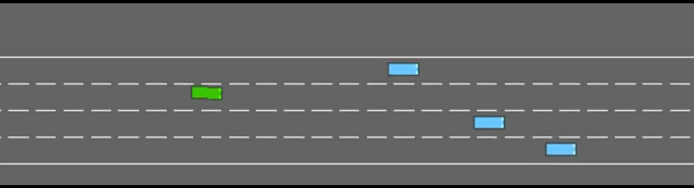
The standard environment was extended with Gaussian observation noise and vehicle occlusion wrappers. These modifications simulate sensor uncertainty, perception failure, and partial observability in autonomous driving.
The agent is evaluated using mean reward, collision rate, and average speed to capture both performance and safety.
The experimental pipeline connects environment simulation, observation corruption, policy learning, and safety evaluation.
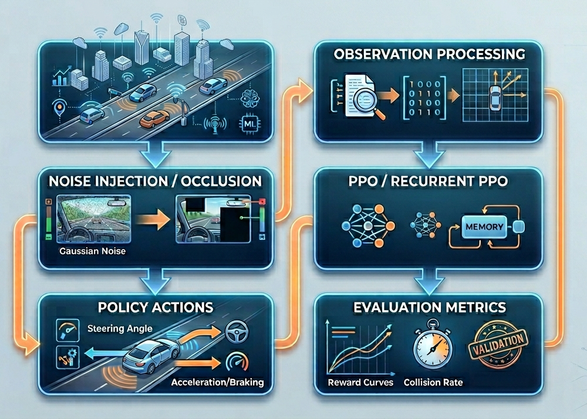
| Component | Configuration |
|---|---|
| Environment | highway-env |
| Algorithms | PPO and Recurrent PPO |
| Robustness Conditions | Gaussian noise, strong noise, vehicle occlusion, extreme occlusion |
| Metrics | Mean reward, collision rate, average speed |
| Validation | Short-run experiments and 100k-step long training validation |
The experiments compare policy performance across clean driving, noisy observations, reward shaping, occlusion, and recurrent memory.
| Experiment | Mean Reward | Collision Rate | Average Speed |
|---|---|---|---|
| PPO Clean | 12.75 | 0.10 | 19.99 |
| PPO Gaussian Noise | 13.84 | 0.00 | 20.04 |
| PPO Eco + Noise | 14.11 | 0.00 | 20.04 |
| PPO Strong Noise | 14.06 | 0.00 | 20.04 |
| PPO Hard Occlusion | 14.09 | 0.00 | 20.09 |
| Recurrent PPO Hard Occlusion | 12.75 | 0.10 | 19.99 |
| PPO Extreme Occlusion | 14.06 | 0.00 | 20.04 |
| Recurrent PPO Extreme Occlusion | 14.46 | 0.00 | 20.04 |
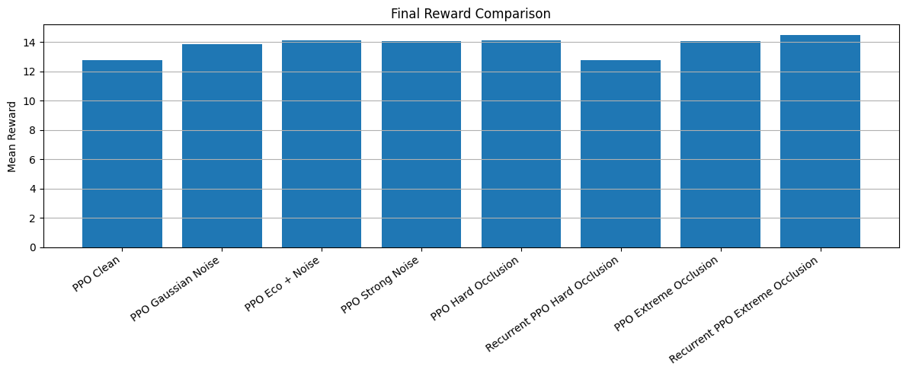
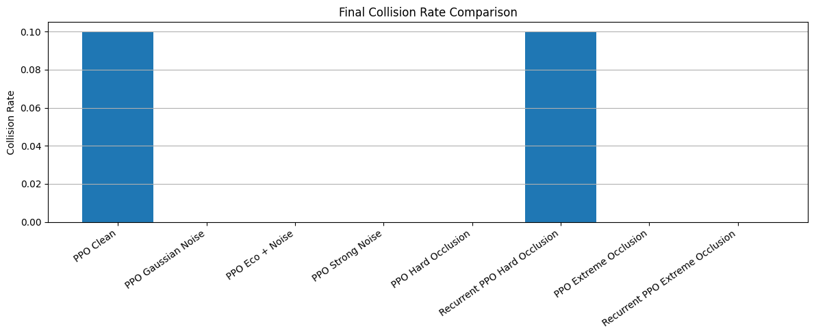
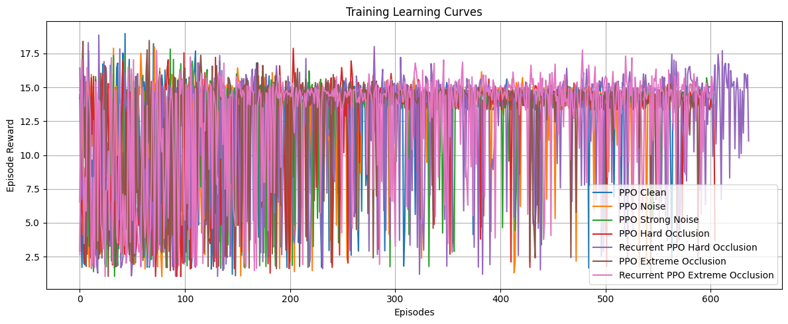
PPO remained stable across increasing Gaussian noise levels, indicating that additive noise alone was not enough to significantly degrade driving performance.
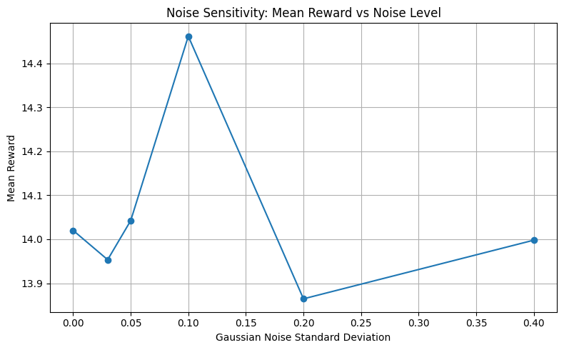
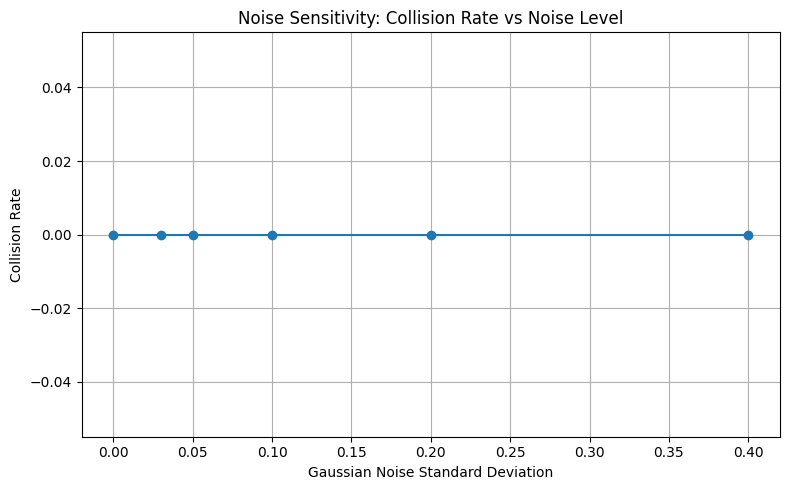
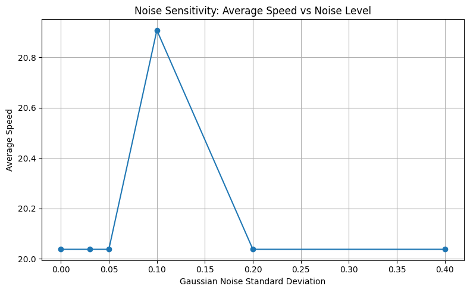
Occlusion produced stronger degradation than Gaussian noise, showing that missing observations are more harmful than noisy observations.
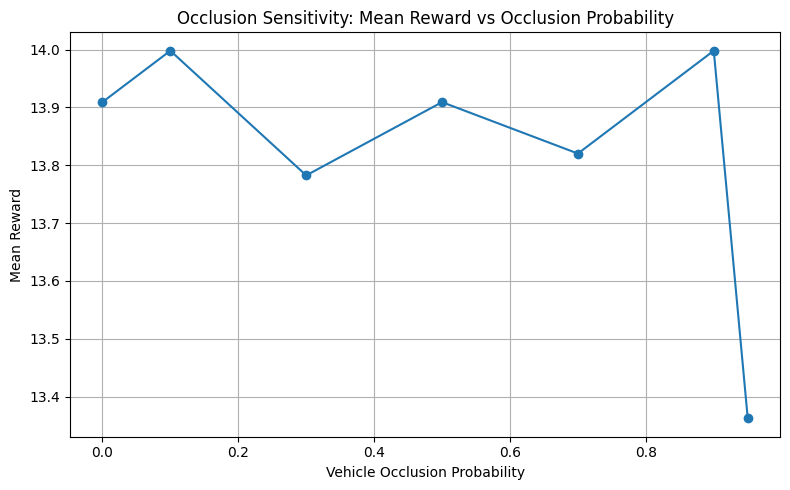
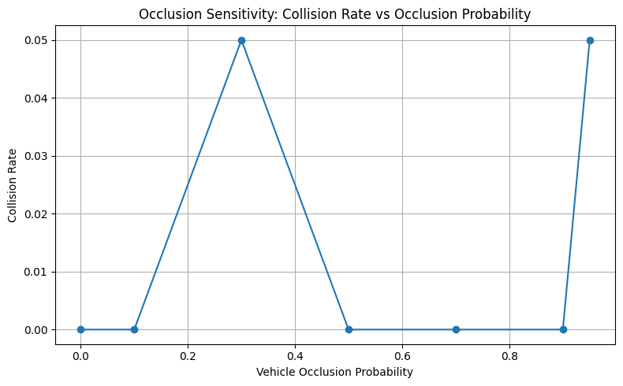
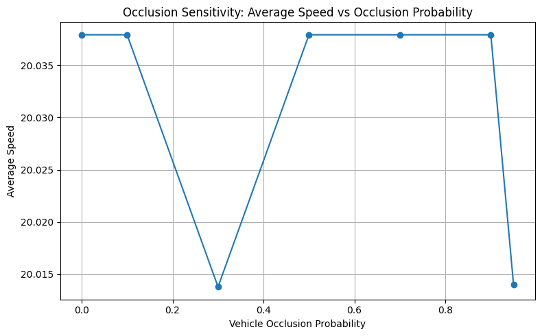
Reward and collision rate remained stable across different Gaussian observation noise levels.
Removing surrounding vehicle observations caused stronger degradation than additive sensor noise.
Recurrent PPO did not consistently outperform standard PPO under the current training budget.
The 100k-step validation showed that PPO remained stable under extreme occlusion.
Code, notebook, final report, and poster resources for the project.
Graduate Reinforcement Learning Final Project Team
This project demonstrates a complete robustness evaluation of reinforcement learning for autonomous driving. The experiments show that PPO can remain stable under Gaussian noise, but partial observability caused by vehicle occlusion creates a more meaningful challenge. Recurrent PPO is a promising direction, but the results suggest that memory-based policies require longer training and careful tuning.
Future work can extend this study with longer recurrent training, more realistic sensor dropout patterns, multi-agent traffic scenarios, and larger autonomous driving simulators.